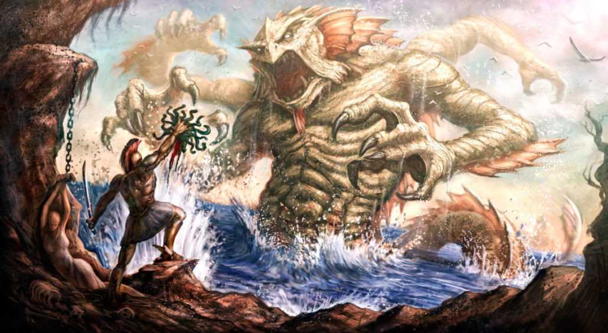

Mitos são narrativas não lógicas que não contém características históricas reais, ou seja, não convém com a realidade. Os mitos surgiram com antigos povos gregos com a principal função de explicar o surgimento da humanidade e fenômenos naturais. Transmitidos de maneira oral ao decorrer das gerações.
Mitos nem sempre estão corretos, pois, na maioria das vezes, são baseados em fundamentos religiosos ou crenças. Porém, alguns acontecimentos que podem ser relevantes pra uma determinada cultura poderiam ter sido transformados em um mito. Os mitos têm característica explicativa pois esse é o seu principal objetivo. Um mito não é um conto de fadas ou uma lenda.